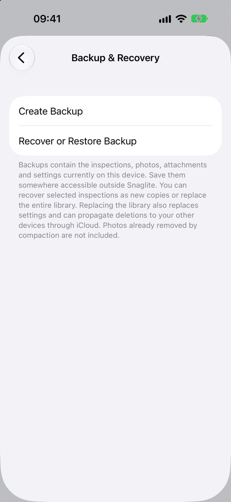
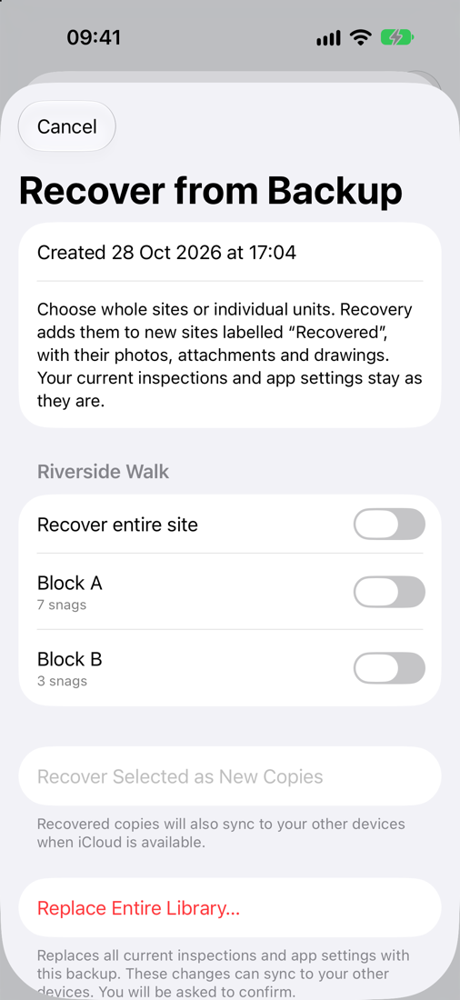

Backup, Recovery and iCloud
Snaglite keeps your inspections in step across your devices with iCloud, and lets you save a complete backup file whenever you need one.
iCloud sync
When you are signed in to iCloud, your sites, units, locations, snags, photos, attachments and drawings sync automatically between every iPhone and iPad signed in to the same Apple Account. There is nothing to set up.
- Changes can take a little while to reach your other devices, especially photos on a slow connection.
- If you are not signed in to iCloud, your inspections are stored on this device only.
- Deleting something on one device deletes it on the others too.
Making a backup
- Go to Settings → Backup & Recovery.
- Tap Create Backup.
- Choose where to save it. Somewhere outside Snaglite is best, such as iCloud Drive, a Files folder or a cloud storage app.
The backup is a single .snaglitebackup file named with the date and time. It contains all the inspections, photos, attachments, drawings and settings on this device.
Full-size photos already removed by Archive and Remove Full-Sized Photos are not included, because they are no longer on the device.

It is sensible to make a backup:
- after finishing an important inspection
- before making big changes, such as deleting or archiving sites
- before moving to a new device
- regularly during active project work
Recovering from a backup
In Settings → Backup & Recovery, tap Recover or Restore Backup and choose a backup file. You then have two choices.
Recover selected inspections (safest)
Choose whole sites, or individual units, and tap Recover Selected as New Copies. They are added as new sites labelled “Recovered”, with their photos, attachments and drawings. Your current inspections and settings are not touched.
Replace Entire Library
This replaces all current inspections and settings with the contents of the backup. Anything added or changed since the backup was made is removed, and those changes sync to your other devices. Snaglite asks you to confirm, and offers to Save Current Backup First.

Moving to a new device
- Same Apple Account: install Snaglite and sign in to iCloud. Your inspections sync across automatically.
- Different Apple Account: make a backup on the old device and save it somewhere the new device can reach, such as iCloud Drive or AirDrop. Then use Recover or Restore Backup on the new device.